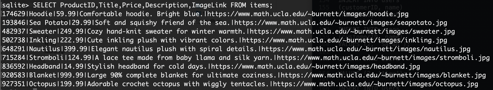

In this assignment, you will create a dynamic product page using Flask, SQLite3, and Jinja.
To complete this task, you will need the following skills:
- Flask Basics – Setting up a Flask app, routing, layouts, and rendering templates with Jinja.
- Database Management – Accessing and querying an SQLite3 database, and displaying results dynamically using Jinja.
- HTML & CSS (Optional) – Structuring content and styling your product page for a polished look.
Overview
You have been hired by a company to build a webpage to sell knitted items. The previous web programmer has abandoned the project, traveled back to their home planet, and cannot be contacted. Looking at what they started, it seems they were attempting to create a static page using HTML. Currently the page doesn’t function well. Clicking on any image goes to the same product page. Also, the price on the page is outdated already. No good.
Your job is to keep the website updated with a database that has been given to you. You want to set this up so that you don’t have to manually update the page by copying and pasting data into the HTML each time. You have better things to do. You will generate a dynamic webpage that will update with information from a sqlite3 database. It will also update the database when a purchase has been made.
Instructions
Setup
Start by reviewing the current page. I suggest using Sublime Text or VScode so you can see the files available. Run
app.pyin your conda virtual environment.Layout
Let’s start code decluttering. Create a
layout.htmlto be a template for the pages. Using HTML and Jinja, remove some code that appears on bothhome.htmlandproduct.htmlsuch asheader,head,footer, etc. and have it inlayout.htmlonly.Database
Here’s a query of the sqlite3 database:

Incorporate the information from the database into the solution. This will require you to unpack the information from the database and put it into some container. I suggest you write this as a function to call whenever you need to get fresh info from the database.
Python data to HTML
Pass the data to the python templates. You will also have to prepare the data so you can use it on the HTML page. Keep in mind you can use python in Jinja but the syntax is limited. For example, you won’t be able to pass a pandas dataframe to a Jinja placeholder. One approach is to use
zip()to prepare your data as a list of tuples to iterate through. You can also pass multiple things throughrender_template. For example,render_template("index.html",jinjaph=pythonvar,jinjaph2=pythonvar2)Once you’re done, clicking an image should take users to the corresponding product page.Make a purchase button
Beneath the description on the product page, add form with a button that says “Purchase”. You want to send along the information of the ID to the homepage when the button is clicked. To do this, nested in the
<form>add an<input>with the atrributetype=hidden. Give it anameattribute set to whatever you’d like and thevalueattribute should be the ID of the product of the page you’re looking at. The form should direct to the home page and use another method that’s more secure than the GET. We don’t want people to be able to type something in the URL and have a purchase happen. Similarily, we don’t want scrapy spiders to be able to make purchases by going to URLs in their usually way.Make a purchase permanent
Add some code to
app.pyto handle a purchase being made. It should take theproductIDand use that to remove the record of the product from the database. After making a purchase, you should then see the home page with the current inventory.Validate your HTML
In order to ensure the website looks good on all browser and not just the very nice ones like Google Chrome, you should validate your pages. Go to your home page (and later one of the product pages). Open the source file (in Chrome, it’s View>Developer>View Source. Open this page for universal HTML validator.
You can directly input the code by copying and pasting. If you modified the previous code from the alien, you should see an error about the
<p>element not belonging as a child of<button>. Change the nested<p>element in your code to a<span>to address this error. Fix any other Errors and Warnings. Info is fine.Styling (Optional)
You can either create your own database or use the provided knitted goods dataset. Additionally, you should style your app to look attractive and interesting! I encourage you to get creative on this.
Submission
- To Gradescope, please submit
product.html,layout.html,home.html,app.py. Optionally, you can submitstyle.cssorproducts.dbif you added anything.
Grading
- (+2) You include a
layout.html, ensuring all redundant code is removed fromhome.htmlandproduct.html. - (+1) Your website loads data from a database named
products.db. The rows may change, but the columns will always beProductID, Title, Price, Description, ImageLink. - (+1) You close any resources you open.
- (+3) On the home page, products are displayed using data from the database.
- (+1) Clicking on an image directs the user to the corresponding product page.
- (+3) The product page dynamically displays product information (using the database).
- (+2) A purchase button is implemented as described.
- (+1) The correct HTTP method is used for making a purchase.
- (+2) Purchases are made permanent by modifying the database.
- (+1) After making a purchase, the user is redirected to the homepage with the updated inventory.
- (+1)
product.htmlandhome.htmlare neat and compact. All HTML files are no more than 25 lines and readable. - (+1) Only two
routes are used inapp.py. - (+1) Your HTML code is validated.